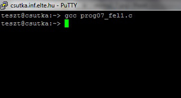
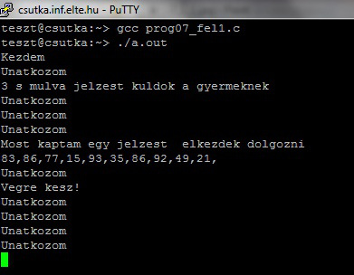
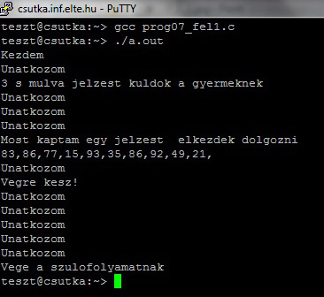

Szignálok, a szülő-gyerek viszony gyakorlati szempontból
Szignálok
Példák a szignálok használatára egy C programozási nyelven írt programban
Feladat
Feladat: készítsünk egy egyszerű programot, amely ha egy meghatározott szignált kap, akkor egy meghatározott szignált küld vissza!
Legyen a feladatunk az, hogy készítsünk C++ programozási nyelven írt programot SigKuldKap.c néven, amely létrehoz egy gyermekfolyamatot! A gyermekfolyamat csak akkor kezdjen véletlen számokat generálni, ha kap a szülőfolyamattól egy SIGUSR1 jelzést! Ha befejezte a munkát, akkor küldjön válaszképpen a szülőfolyamatnak egy SIGUSR2 jelzést!
//--------------------
// SigKuldKap.c
//--------------------
#include <stdlib.h>
#include <stdio.h>
#include <unistd.h> // Például a fork függvény.
#include <signal.h> // Például a kill függvény.
#include <sys/types.h> // Például a pid_t típus.
Void kezdjbele(int jelzes) {
// A callback függvény, paramétere a szignál számértéke
// a gyermekfolyamatnak szóló jelzéshez tartozó függvény.
Printf(„Most kaptam egy jelzest – elkezdek dolgozni\n”);
int i;
for ( i = 0; i < 10; i++) {
printf(„%i,”, rand() % 100);
}
printf(„\n”);
kill(getppid(), SIGUSR2);
// Küld egy jelzést a szülőfolyamatnak, hogy kész van.
}
void kesz(int jelzes) {
// A callback függvény, paramétere a szignál számértéke
// a szülőfolyamatnak szóló jelzéshez tartozó függvény.
Printf(„Vegre kesz!\n”);
}
int main(int argc, char * argv[]) {
pid_t child;
int status;
int i;
printf(„Kezdem\n”);
child = fork(); // A gyermekfolyamat létrehozása.
If (child < 0) {
perror(„hiba\n”);
exit(1);
}
if (child == 0) { // A gyermek.
Signal(SIGUSR1, kezdjbele);
// A gyermekfolyamathoz tartozó jelzéskezelő beállítása.
For( i = 0; i < 10; i++) {
printf(„Unatkozom\n”);
sleep(1);
}
} else {
signal(SIGUSR2, kesz);
// A szülőfolyamathoz tartozó jelzéskezelő beállítása.
Int ido = rand() % 5;
printf(„%i s mulva jelzest kuldok a gyermeknek\n”, ido);
sleep(ido);
kill(child, SIGUSR1);
// Jelzést küld a gyermeknek, hogy kezdjen bele a
// véletlen szám generálásába.
Waitpid(child, &status, 0);
printf(„Vege a szulofolyamatnak\n”);
};
return 0;
}
//--------------------
A futtatás eredménye
>gcc SigKuldKap.c -o SigKuldKap
Kezdem
Unatkozom
3 s mulva jelzest kuldok a gyereknek
Unatkozom
Unatkozom
Unatkozom
Most kaptam egy jelzest – elkezdek dolgozni
33,86,77,15,93,35,86,92,49,21,
Vegre kesz
Unatkozom
>
A következő képeken a program látható futás közben:
A program futás közben
A program futás közben
A program futás közben
Megfigyelés
A gyermekfolyamatnál beállítjuk a jelzéskezelőt, és várunk a szülő jelzésére, a gyermek jelzéskezelője lefut. A jelzéskezelő elvégzi a munkát, majd küld egy jelzést ennek befejezéséről a szülőnek. A szülő függvénye is lefut, majd mindkettő folytatja a megkezdett programot. Van jelzéskezelő, tehát nem áll le a folyamat, a függvény végrehajtása után folytatódik a program. A gyermekfolyamat vár tovább, és időnként kiírja a szöveget, a szülőfolyamat pedig vár a gyermekfolyamat befejezésére. (Kilépni CTRL-C billentyűkombináció leütésével lehet.)
A UNIXoperációs rendszerben a programunk időzítését is jelzéskezeléssel oldhatjuk meg. Az alarm függvény hívása SIGALRM jelzést küld az aktuális folyamatnak a paraméterében megadott másodperc múlva.
")
")
")
")